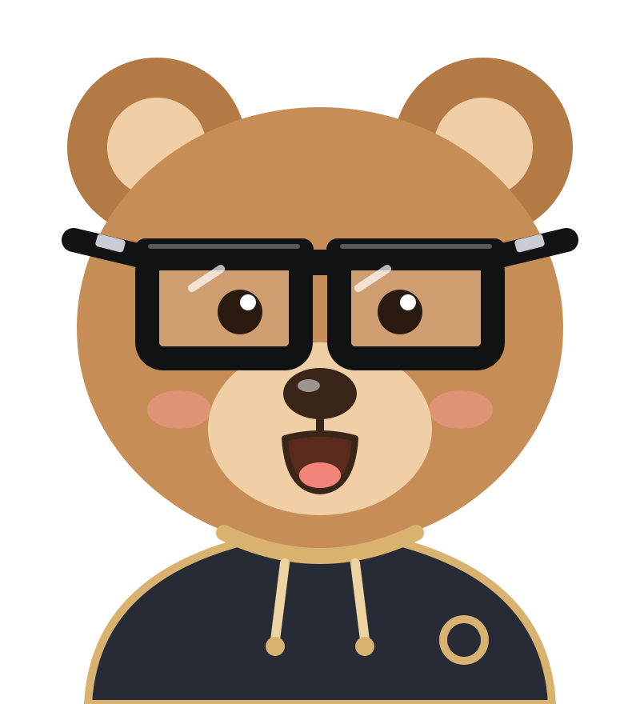

Atelier des tracés
Les tracés de l'examen pas à pas, en OGP, en ETSO et en Vision : une règle à la fois, puis de plus en plus difficile. Chaque erreur est expliquée, et le calcul vérifie toujours le tracé.

Les niveaux
Dans chaque chapitre, un niveau réussi débloque le suivant. 3 étoiles : sans erreur ni indice.